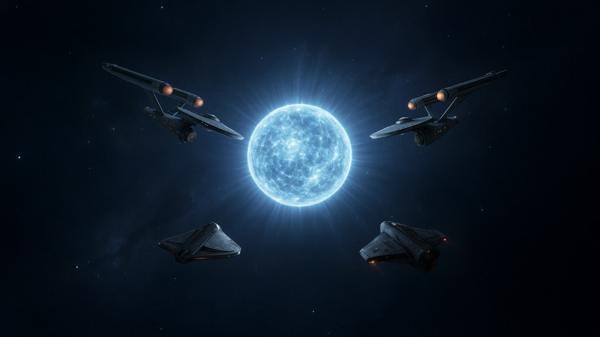
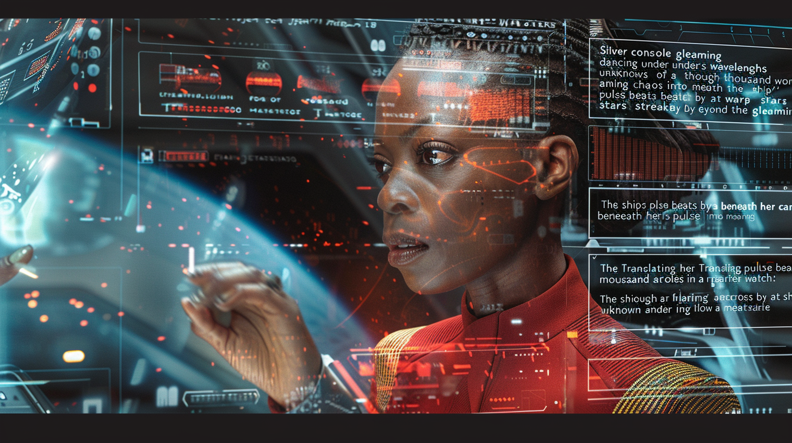
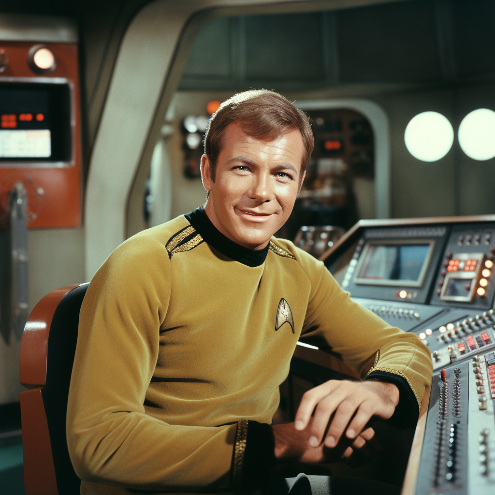

Moving-image productions
Music Videos
Short-form visual productions organized separately from the extended opera.

Yesterday’s Son — The Loneliest Man
The current shot-by-shot music-video storyboard and its working image, audio, and video archive.
ANDORIAN
Andorian Instrumental
Music-video intake page awaiting its confirmed audio and visual assets.
DELTANITE
Deltanite Instrumental
Corrected project name confirmed; source audio and visuals still need to be identified.

Uhura
66 still-image candidates, 15 motion tests, and a Cinema 4D model gathered for review.

Captain of Persuasion / Kirk
18 focused Kirk portrait candidates and one OBJ model gathered for review.